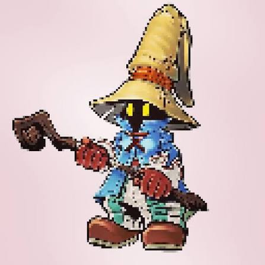
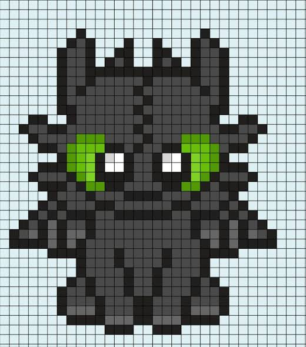
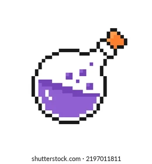

BİLGELİK · CESARET · MERAK
İçindeki büyüyü uyandır.
Sıradan dünyayı geride bırak. Binlerce yıllık sırlar, yeni bir dönemin başlangıcında seni bekliyor.
Akademiyi keşfet AKADEMİNİN KALBİ01 / KEŞFETAna KampüsUçuş dersleri, kadim salonlar ve büyük buluşmalar.DERSLERİ KEŞFET
AKADEMİNİN KALBİ01 / KEŞFETAna KampüsUçuş dersleri, kadim salonlar ve büyük buluşmalar.DERSLERİ KEŞFET

YENİ DERS02 / SAVUNMAKaranlık SanatlarEn güçlü büyü, kendini korumayı bilmektir.DERSİ KEŞFET
İLERİ SEVİYE03 / SAHA DERSİYaratık BakımıEjderhalara fısıldayan öğrenciler aranıyor.DERSİ KEŞFET
04 / LABORATUVARİksir YapımıŞişelenmiş şöhret, kaynatılmış ihtişam.DERSİ KEŞFETYENİ DÖNEM BAŞLIYOR
Kendi hikâyeni yaz.
Akademi başvuru formu · Demo
Bu demo formu bilgileri sunucuya göndermez.